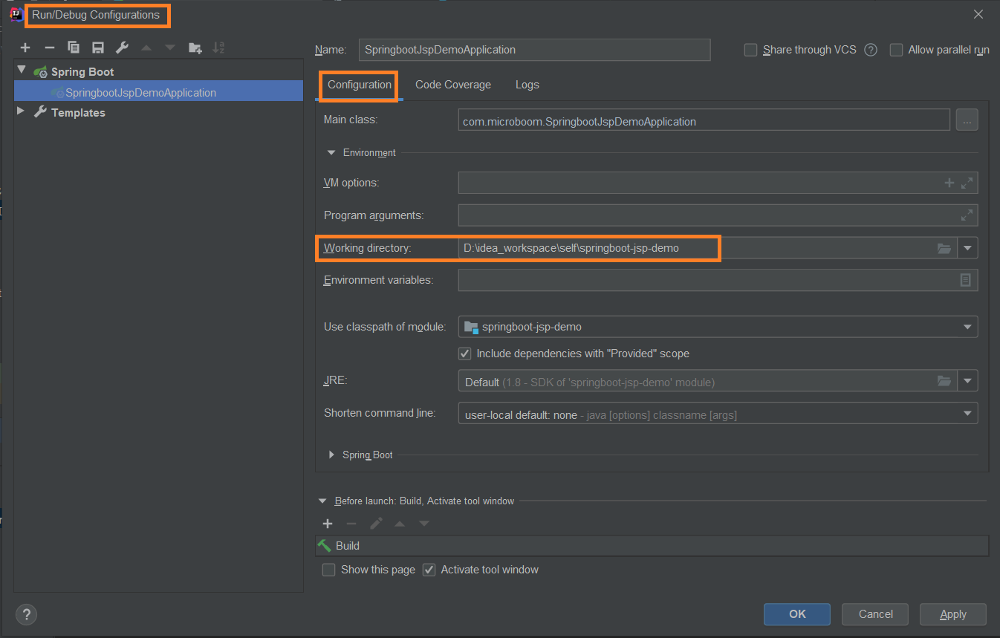

Spring Boot 项目中使用 JSP
想在 Spring Boot 中使用 JSP，需要满足一些特殊要求。
1. 项目结构
Spring Boot 项目想要支持 JSP，其项目结构必须如下：
spring-boot-jsp
│── pom.xml
└── src
├── main
│ ├── java
│ ├── resouces
│ └── webapp
│ └── WEB-INF
│ └── jsp
│ └── welcome.jsp
└── test
在配置文件 application.properties 中进行配置：
spring.mvc.view.prefix=/WEB-INF/jsp/
spring.mvc.view.suffix=.jsp
spring.mvc.view.prefix指明 jsp 文件在 webapp 下的哪个目录spring.mvc.view.suffix指明 jsp 以什么样的后缀结尾
2. 引入依赖包
<dependency>
<groupId>org.springframework.boot</groupId>
<artifactId>spring-boot-starter-web</artifactId>
</dependency>
<dependency>
<groupId>javax.servlet</groupId>
<artifactId>jstl</artifactId>
</dependency>
<dependency>
<groupId>org.apache.tomcat.embed</groupId>
<artifactId>tomcat-embed-jasper</artifactId>
</dependency>
spring-boot-starter-web包依赖了spring-boot-starter-tomcat，因此，后者不再需要单独配置；jstl是一个 JSP 的 jstl 标签库；tomcat-embed-jasper主要用来支持 JSP 的解析和运行。
3. 编写页面和后台
<%@ page contentType="text/html; charset=UTF-8" pageEncoding="UTF-8"%>
<!DOCTYPE html>
<html>
<body>
Time: ${time}
<br>
Message: ${message}
</body>
</html>
@Controller
public class WelcomeController {
@GetMapping("/")
public String welcome(Model model) {
model.addAttribute("time", new Date());
model.addAttribute("message", "hello world");
return "welcome";
}
}
4. 运行方式一：Maven 命令运行
cmd 进入项目根路径下，执行：
mvn clean spring-boot:run
补充：Idea 的 Maven 工具窗口中，有个 M 图标，通过点击它在弹出的窗口中可直接手动执行 maven 命令。
5. 运行方式二：在 IDEA 中运行
如果像其他项目一样，直接在 IDEA 中通过 main 方法来启动项目，在访问测试的时候会出现 404 not found 。
这是因为 Spring Boot JSP 项目需要额外进行一个设置：选择 Edit Configurations 选项，打开 Configuration，为 Working directory 赋值为项目的根目录。

6. 运行方式三：打 war 包部署运行
step 1：在 pom.xml 里设置打包格式为
war。<packaging>war</packaging>step 2：排除内嵌的 Tomcat 依赖，避免 jar 包冲突。
<dependency> <groupId>org.springframework.boot</groupId> <artifactId>spring-boot-starter-web</artifactId> <!-- 排除内置容器。导出成 war 包可以让外部容器运行 spring-boot 项目--> <exclusions> <exclusion> <groupId>org.springframework.boot</groupId> <artifactId>spring-boot-starter-tomcat</artifactId> </exclusion> </exclusions> </dependency>step 3：添加 Servlet 的支持
Spring Boot 项目必须实现
SpringBootServletInitializer接口的configure()方法才能让外部容器运行 Spring Boot 项目。在启动类同目录下创建
ServletInitializer类：public class ServletInitializer extends SpringBootServletInitializer { @Override protected SpringApplicationBuilder configure(SpringApplicationBuilder application) { return application.sources(JspApplication.class); } }step 4：maven 命令打包
在项目根目录下执行：
mvn clean packagestep 5：发布运行
将项目 target 目录下的
.war包拷贝到 tomcat 的webapps目录下，运行 tomcat 的bin目录下的startup.bat启动 tomcat 。在浏览器中访问即可。